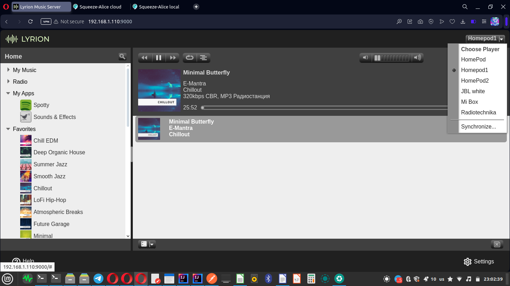
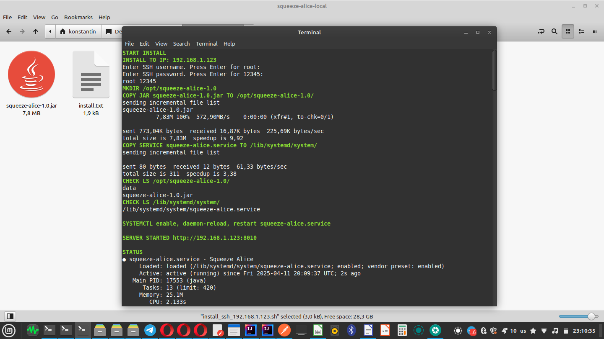
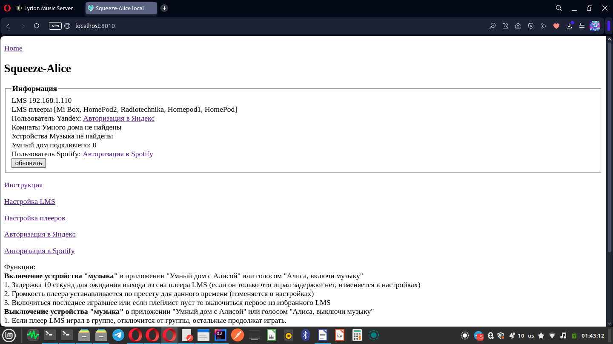
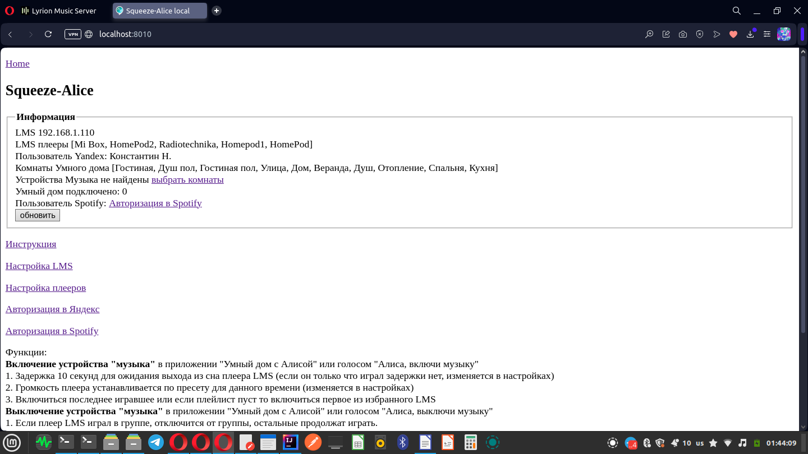
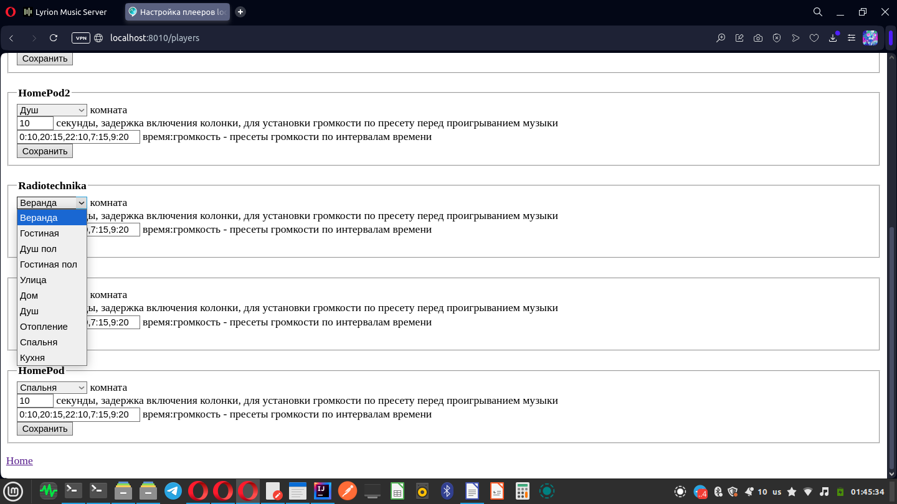
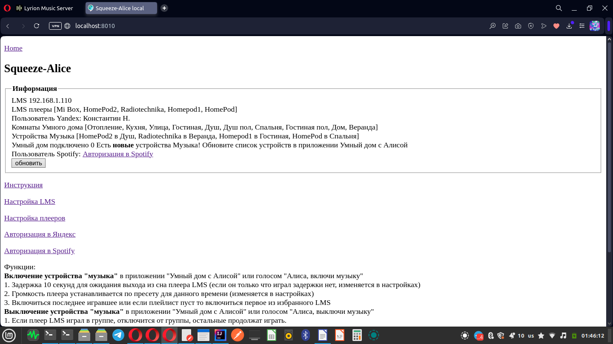
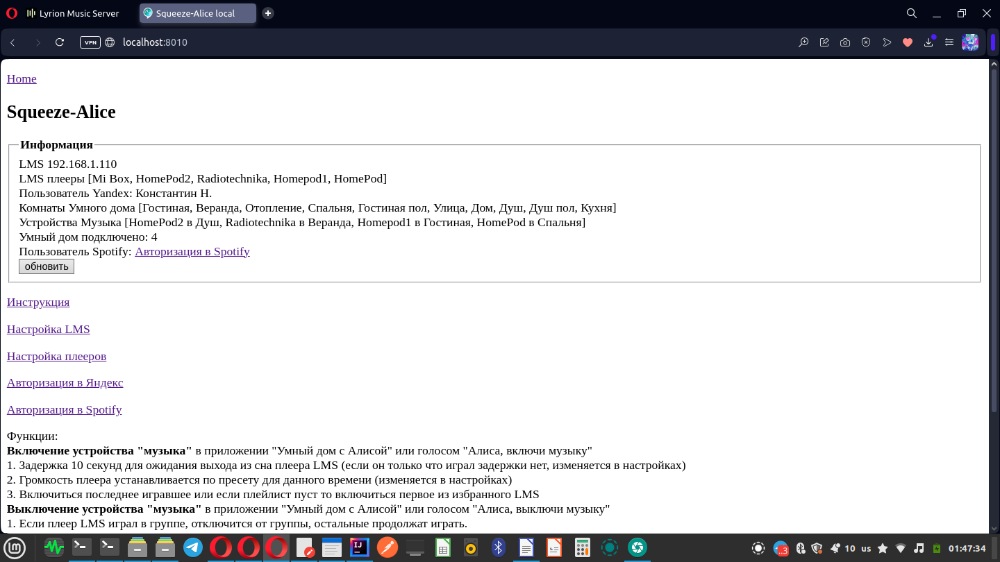

Это
навык Умного дома с Алисой для управления
плеерами LyrionMediaServer
Установка:
Должен
быть запущен Lyrion Media Server https://lyrion.org
Скачать
архив
https://github.com/knovash/squeeze-alice/blob/main/squeeze-alice-local.tar.gz
Запустить
скрипт install_ssh_192.168.1.123.sh скопирует файлы
и запустит сервис навыка, поменяйте в
названии файла на свой ip.
Открыть
http://192.168.1.123:8010/
Нажать
"Авторизация в Яндекс" - подтвердить
авторизацию в Яндекс
Нажать
"Настройка плееров" - выбрать
комнаты Умного дома для плееров LMS
Открыть
приложение "Дом с Алисой"
Добавить
Устройство умного дома
Найти
производителя "Lyrion Media Server"
Нажать
"Привязать к Яндекс"
Нажать
"Обновить список устройств"
Показаны
устройства "музыка" в комнатах
Ура,
теперь всё готово!
Удаление:
Запустить
скрипт uninstall_ssh_192.168.1.123.sh, поменяйте в
названии файла на свой ip.
Скрипт
удалит файлы
rm
-r /opt/squeeze-alice-1.0
rm
/lib/systemd/system/squeeze-alice.service
Остановит
сервис навыка
systemctl
disable squeeze-alice.service
systemctl
daemon-reload
В
приложении "Дом с Алисой"
удалите
производителя и устройства

LMS
запущен

Архив
распакован

Скрипт
установки запущен

Сервис
навыка запущен

Авторизация
в Яндекс выполнена

Выбор
комнаты Умного дома для плеера
LMS

Устройства
музыка созданы, можно обновить список
устройств в умном доме

4
устройства Музыка подключены в Умный
дом